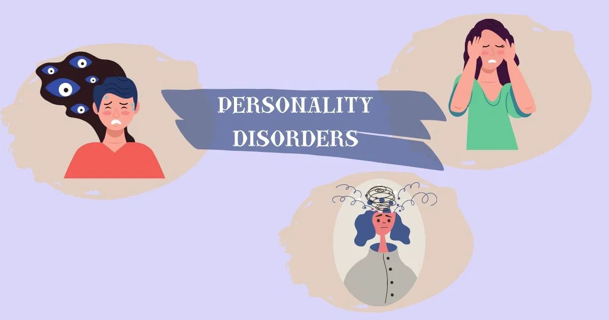

Mental health is a crucial aspect of overall well-being, yet it is often shrouded in misunderstanding and stigma. Among the most misunderstood mental health conditions are personality disorders. These disorders, which affect an individual's patterns of thinking, feeling, and behaving, are often the subject of misinformation and prejudice. The term "personality disorder" itself can evoke negative reactions, leading to a widespread misconception that those diagnosed with these conditions are fundamentally flawed or even dangerous. Personality disorders are not merely extreme versions of typical personality traits; they are complex and deeply rooted conditions that significantly impact an individual's life and relationships. The stigma associated with these disorders can be as debilitating as the symptoms themselves, leading to social isolation, discrimination, and reluctance to seek help. This stigma is fueled by a lack of understanding, sensationalized media portrayals, and a cultural tendency to oversimplify mental health issues. This article aims to provide a deeper understanding of personality disorders by exploring their nature, the challenges they present, and the harmful impact of stigma. By demystifying these disorders and addressing the misconceptions that surround them, we can foster a more compassionate and informed approach to mental health. It is essential to recognize that personality disorders, like all mental health conditions, require empathy, support, and appropriate treatment. Through education and advocacy, we can begin to dismantle the stigma that prevents so many individuals from leading fulfilling lives.
Personality disorders are a group of mental health conditions characterized by enduring patterns of behavior, cognition, and inner experience that deviate significantly from the expectations of an individual's culture. These patterns are inflexible and pervasive, leading to distress or impairment in social, occupational, or other areas of functioning. The Diagnostic and Statistical Manual of Mental Disorders (DSM-5) categorizes personality disorders into three clusters:
1. Cluster A (Odd or Eccentric Disorders):
2. Cluster B (Dramatic, Emotional, or Erratic Disorders):
3. Cluster C (Anxious or Fearful Disorders):
Each personality disorder has its own unique features, but they all share a commonality in how they profoundly affect a person's interactions with the world. Common Misconceptions and Stigma Personality disorders are often misunderstood, leading to harmful stereotypes and stigma. Some of the most common misconceptions include:
• Personality disorders are just "bad behavior."
People often mistake the symptoms of personality disorders for deliberate choices or moral failings. This misconception overlooks the fact that these disorders are complex mental health conditions with roots in genetics, brain structure, and environmental factors.
• People with personality disorders are dangerous.
While some disorders, such as Antisocial Personality Disorder, are associated with aggressive behavior, most people with personality disorders are not dangerous. This stereotype can lead to fear and isolation, further marginalizing those with the disorder.
• Personality disorders are untreatable.
This myth is particularly damaging as it can discourage individuals from seeking help. While personality disorders are challenging to treat, many individuals benefit from therapy, medication, and support.
• Personality disorders are rare.
In reality, personality disorders are relatively common, affecting approximately 9% of the U.S. population. The belief that these disorders are rare contributes to the sense of isolation many individuals with personality disorders experience.
Stigma surrounding personality disorders can have profound effects on those diagnosed:
1. Social Isolation: The fear of being judged or misunderstood can lead individuals with personality disorders to withdraw from social interactions. This isolation can exacerbate symptoms and contribute to a sense of hopelessness.
2. Barriers to Treatment: Stigma can prevent individuals from seeking help due to fear of being labeled or judged. Even when individuals do seek treatment, they may face bias or lack of understanding from healthcare providers.
3. Internalized Stigma: People with personality disorders may internalize negative stereotypes, leading to feelings of shame, low self-esteem, and self-blame. This can create a vicious cycle where the stigma exacerbates the disorder's symptoms.
Fighting the Stigma: Combating the stigma surrounding personality disorders requires a multifaceted approach that includes education, advocacy, and support.
1. Education: Increasing public awareness about personality disorders is crucial in dispelling myths and fostering understanding. Educational campaigns can highlight the complexity of these disorders, emphasizing that they are not simply "bad behavior" but legitimate mental health conditions.
2. Media Representation: The media plays a significant role in shaping public perceptions. Encouraging accurate and compassionate portrayals of individuals with personality disorders can help reduce stigma. It's essential to challenge harmful stereotypes and promote stories that highlight the humanity and resilience of those living with these conditions.
3. Advocacy: Advocacy efforts can help change policies and practices that contribute to stigma. This includes promoting mental health parity, ensuring access to quality care, and supporting legislation that protects the rights of individuals with personality disorders.
4. Support Networks: Providing support for individuals with personality disorders is vital in reducing isolation and promoting recovery. Peer support groups, therapy, and community resources can offer a sense of belonging and validation.
5. Language Matters: The way we talk about personality disorders can either perpetuate stigma or foster understanding. Using person-first language (e.g., "a person with Borderline Personality Disorder" rather than "a borderline person") can help separate the individual from the disorder, reducing stigma.
6. Encouraging Open Conversations: Creating safe spaces for open dialogue about mental health, including personality disorders, can help break down barriers. Encouraging conversations in schools, workplaces, and communities can foster empathy and reduce prejudice.
The journey toward understanding and accepting personality disorders is a critical step in advancing mental health awareness and care. These disorders are not merely labels or categories; they represent real and often painful experiences that affect the lives of millions of people. The stigma that surrounds personality disorders does not just hinder those diagnosed; it impacts families, communities, and society as a whole. By challenging the myths and misconceptions that fuel this stigma, we can create a more compassionate and inclusive world. A world where individuals with personality disorders are not judged or feared but are instead met with empathy, respect, and support. Education is the key to this transformation. When we learn about the complexities of personality disorders, we begin to see beyond the stereotypes and understand the human experiences behind them. Moreover, fighting stigma requires collective action. It involves advocating for better mental health policies, demanding accurate media representation, and fostering environments where open conversations about mental health are encouraged. It also means supporting those who live with personality disorders, not just by offering treatment but by providing the understanding and community that everyone deserves. In the end, dismantling the stigma associated with personality disorders is not just about improving the lives of those affected. It is about advancing our collective understanding of mental health, promoting a culture of empathy, and ensuring that everyone has the opportunity to live a fulfilling and dignified life. Together, we can make a difference, one conversation, one story, and one act of kindness at a time.